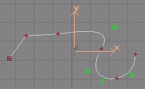
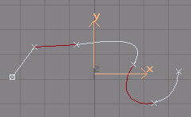
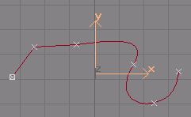
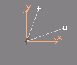
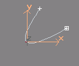
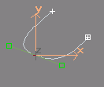
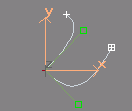
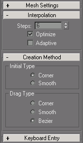

Les splines
Les logiciels 3D offrent des moyens très faciles de créer des primitives basiques: cubes, cylindre... Dans une modélisation plus élaborée, ces formes simples s'avèrent rapidement inapropriées. Les techniques plus complexes comme l'extrusion prennent comme éléments primaires des courbes 2D ou 3D: les splines.
Un peu de topologie
Les courbes dans gmax se composent de différents types de sous éléments: les vertices (singulier: vertex), les segments et les splines.
Vertices |
Segments |
Splines |
|  |  |  |
Quelques Remarques :
Les vertices ne sont pas tous du même type. La différence tient au niveau de la tangente de la courbe au niveau du vertex.
Les vertices de type Corner ont des tangentes discontinues
orientées automatiquement en fonction des vertices voisins
Les vertices de type Smooth ont des tangentes continues orientées
automatiquement en fonction des vertices voisins
Les vertices de type Bézier ont des tangentes continues
orientées par le dessinateur. La tangente commune est représentée
par deux clés vertes.
Les vertices de type Bézier-Corner ont des tangentes discontinues
chacune orientée par le dessinateur. Les tangentes sont représentées
par deux clés vertes.
|
Corner
|
Smooth
|
Bezier
|
Bezier-Corner
|
|  |  |  |  |
Le type de chaque vertex peut être modifié en le sélectionnant et cliquant droit pour ouvrir le menu contextuel (en cas de problème d'affichage, voir: Bug menu contextuel)
Les segments sont toute portion de courbe comprise entre deux vertices. Les segments peuvent être courbes (leur forme sera interpolée en fonction des tangentes au niveau des vertices) ou bien être des segments de droite ignorant ces tangentes.
Le type du segment peut être modifié dans le menu contextuel.
Les splines sont un ensemble de segments. On remarque la représentation particulière du vertex le plus à gauche (figures en haut). C'est le vertex n°1 de la spline. Une courbe peut être composée de plusieurs splines jointives ou non. Dans le cas de splines jointives, il faut savoir que le point commun est en fait constitué de deux vertices ayant une position spatiale identique. Si on fusionne les vertices, il n'y aura plus qu'une unique spline. Chaque spline possède son vertex n°1.
Comment dessiner une spline?
gmax propose dans le panneau de commande Create, et l'onglet Shapes différentes fonctions pour tracer des courbes particulières: rectangles, arc, cercles, textes... Nous allons nous intéresser à la fonction Line qui offre un grande variété de création. Tout se fait à la souris. On peut néanmoins s'aider des snaps.
Les paramètres intéressants par défaut sont:
|  |
La case Interpolation:Steps est très importante en modélisation low poly car elle définit le nombres de points utilisés pour discrétiser les segments. Ce qui donnera autant d'arêtes lorsque la courbe sera extrudée. On visera donc à utiliser le nombre le plus faible qui ne nuise pas trop au rendu visuel du modèle. Les paramètres Initial Type et Drag Type indiquent de quelle façon on va construire la courbe. Dans le mode par défaut, cliquer sur la fenêtre de travail. Si vous relâcher tout de suite le clic, le vertex sera Corner. Sinon, déplacer la souris, relâcher le clic. Aucun nouveau vertex n'a été crée mais la courbe est "attirée" par cet endroit. Vous avez créé une clé de tangente. Le vertex est de type Bezier. Les différentes combinaisons de Initial Type et Drag Type provoquent des comportements qui seraient longs à expliquer. Entrainez-vous à gribouiller des courbes. C'est le meilleur moyen d'apprendre. Vous pourrez toujours les rééditer par la suite. |